تقييم أداء مدير المدرسة
اضغط على أي بطاقة لعرض التفسير وسلّم التقدير

📌
اختر مستوى التقدير:
1
2
3
4
5
وصف المستوى 3
تفسير المستوى
المصدر: الدليل الإرشادي لإدارة الأداء الوظيفي لشاغلي الوظائف التعليمية - الإصدار الثاني